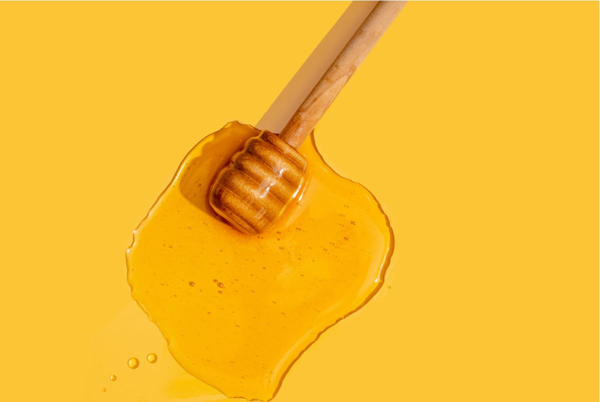

Nos dedicamos a traer las mejores mieles a nuestros clientes, ofreciendo una gran cantidad de tipos mieles de exquisitos sabores ,
!bienvenidos a nuestra pagina web Little Honey, nos apasiona querer brindarles a nuestros clientes los mejores tipo de mieles naturales¡
aqui ofrecemos una gran variedad de tipos de mieles naturales las cuales fueron cuidadosamente recolectas de diferentes colmenas y producto de la naturaleza.
En Nuestra tienda online, encontrarás una gran variedad de mieles desde plantas hasta miel de abeja, Descubre nuevos sabores y apoya a nuestros apicultore locales

En la siguiente Seccion encontraras una gran cantidad de Tipos de mieles la cuales Podras comprar en nuestra pagina
******[ Tipos de Mieles ]******
[ Miel de Abeja ]
La tradicional una miel que tiene muchos usos tanto en comidas como antiinflamatorio, antioxidante y agente antibiótico
[ Miel de Acacia ]
La miel de acacia tiene un sabor dulce y un color ligero , este se toma antes de dormir ya que calma la ansiedad y los nervios.
[ Miel de Sabia ]
La miel de salvia tiene muchos beneficios para la salud entre ellos son : ayuda con problemas respiratorios, como es la tos y sirve para reforzar el sistema inmune
[ Miel de Floral ]
Su aroma es fuerte y su sabor tambien, esta esta hecha de polen de diferentes especies de flores
[ Miel de Tilo ]
Esta miel es de color claro, casi transparente, y su sabor es bastante dulce, tiene beneficios para la salud los cuales son: refriados y gripes